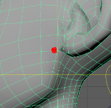
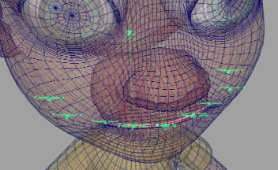
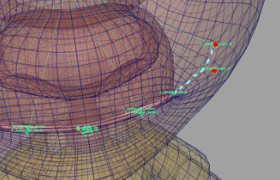
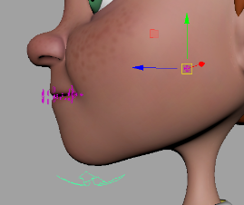
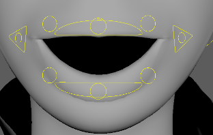
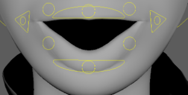

Creates a cartoon jaw and lips. Features include lips seal, zipper, auto volume, thickness, upper
lip push, etc.
Guides:
- 'Jaw' - Jaw pivot position, usually positioned in the middle of the
head on the X axis and slightly in front of and below the ears on the Y and Z
axes.

- 'L/R_mouth_corner' - Place at the lip corners and align with
the lips.
- 'M_upper_lip', 'M_lower_lip' - Position at the center of the upper lip
or lower lip.
- 'L/R_upper_lip_minor', 'L/R_lower_lip_minor' - Placed evenly
between middle and corner guides on the lips.
- 'L/R_mouth_shape_A', 'L/R_mouth_shape_B' - Place these guides past the lips and
inside the cheek. A curve will be driven by them, and the corner ctrls will move along that
curve.


Guide's Important Notes:
Attributes:
- 'Mirror Mouth Guides' - This button positions the right side guides in
a mirror image of the left side.
In 'Solo Mode', they will be mirrored in
world space.
- 'Ctrls Scale' - Scale all the node ctrls. Note that the
attachments 'Ctrls
Settings' and 'CtrlsShape' will override
this. [Video]
- 'Ctrls Offset Position' - Offset of lips ctrls for when the ctrls are
hidden inside the lips mesh.
- 'Jaw Ctrl Offset' - Offsets the jaw ctrl relative to its pivot. Use
this attribute to position the 'jaw_ctrl' under the chin.

- 'Lips Skinning Joints' - The number of skinning joints per
lip, not including corner joints.
- 'Lips Bias' - Use this to control how much the lips move
with 'M_upper/lower_lip_ctrl'.
value of 1.5
value of 1.0
- 'Create Roll' - All minor and mid controls will have the 'Roll'
and 'Roll loc Vis' attributes, which allow them to be rotated from a different position. The
'Roll Loc Vis' attribute will display a locator that controls from where the roll
rotates.
(roll offset positions)
- 'Upper Roll Offset', 'Lower Roll Offset' - The initial roll offset
position from the ctrls. In other words, translation values of the roll locators.
- 'Upper Lip Push' - The lower lip will push
the upper lip when they collide. Has an on/off attribute on 'M_upper_lip_ctrl'.
- 'Micro Ctrls' - Add a ctrl for every lip skinning joint.
Connections:
- 'Root Input' - Drives the whole node, usually driven by the
head.
- 'Head Output' - An output at the 'Root Input' usually drives the upper
teeth.
- 'Jaw Output' - An output at the jaw joint usually drives the lower
teeth.
_____________________________________________
Get Arise at: https://www.ariserigging.com